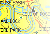
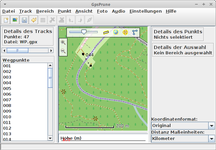

Programme
Zum Verständnis dieses Artikels sind folgende Seiten hilfreich:
Die hier vorgestellten Programme werden im Zusammenhang mit OpenStreetMap genutzt. Meist sind sie in den Paketquellen enthalten oder können mit minimalem Aufwand installiert werden.
| Programmübersicht | |||
| Software | Verwendungszweck | Oberfläche | Ubuntu-Paket verfügbar? |
| Auslesen und Konvertieren von (GPS-/OSM-)Daten | |||
| BT747 | Gerät auslesen, Daten konvertieren | Java | Ja |
| cGPSmapper | Karten zusammenfügen für Garmin | Kommandozeile | Nein |
| FoxtrotGPS | Korrelation von Tracks mit Bilder | GTK | Ja |
| Gebabbel | Daten konvertieren, GPS-Gerät auslesen | Qt | Ja |
| GPSBabel | Daten konvertieren, GPS-Gerät auslesen | Kommandozeile | Ja |
gpsman  | GPS Manager - Datenkonverter | Tcl/Tk | Ja |
| GpsPrune | GPS-Editor/Viewer, u.a. Gerät auslesen | Java | gpsprune |
| MapSource | GPS-Gerät auslesen und beschreiben, Bearbeitung von Tracks und Waypoints | Wine | Nein |
| mkgmap | Datenkonvertierung für Garmin | Kommandozeile | Nein |
| MTKBabel | GPS-Geräte mit MTK-Chipsatz auslesen (z.B. i-Blue 747, Holux M-241) | Kommandozeile | Ja |
| osmium-tool | Konvertierung von Daten | Kommandozeile | osmium-tool |
| QLandkarteGT/M | bearbeiten, übertragen von Waypoints, Tracks, Routen und Karten für Garmin-GPS | Qt | Ja |
| Viking | GPS-Editor/Viewer, u.a. Gerät auslesen | GTK | Ja |
| Kartenerstellung | |||
| JOSM | OSM Karten-Editor | Java | Ja |
| Merkaartor | OSM Karten-Editor | Qt | Ja |
| Kartennutzung | |||
| Geeqie | Anzeige von GPS-Daten in Bildern | GTK | Ja |
| gosm | Kartenbetrachter | Gtk | Nein |
| Gosmore | Navigation mit Sprachausgabe und OSM-Viewer | GTK | gosmore |
| GpsDrive | Navigation mit Sprachausgabe und OSM Unterstützung | GTK | Ja |
| Marble | Desktop Globus wie "Google Earth" | Qt | Ja |
| Maperitive | Karten-Renderer | Mono | Nein |
| Navit | Navigation | GTK | Ja |
| Viking | Anzeige von Tracks und Waypoints | GTK | Ja |
XNavigator  | OSM 3D-Modell von ganz Deutschland | Java | Nein |
Programme¶
BT747¶
BT747 bietet eine ansprechende Oberfläche für GPS-Empfänger mit MTK/MTK2-Chipsatz. Nach dem Auslesen des Logs konvertiert das Programm die Daten in verschiedene Formate (inkl. Filterfunktionen). Ebenso ist das Programm zum Geotagging von Fotos geeignet. Mit Hilfe der ebenfalls angebotenen Version für Mobiltelefone und PDAs ist es auch unterwegs recht einfach, POIs für OpenStreetMap zu erfassen. BT747 ist ein Java-Programm. Details zur Nutzung finden sich im Artikel Holux m241.
cGPSmapper¶
Das kostenpflichtige Programm cGPSmapper gestattet es, mehrere Karten des Formats .img zusammenzufügen, um sie in einem Garmin-Gerät nutzen zu können.
Installation¶
Von der Herstellerseite die Datei cgpsmapper-static.gz bzw. sendmap20.gz  herunterladen und entpacken [2].
herunterladen und entpacken [2].
Merkaartor¶
Merkaartor ist ein Qt-basierter Editor, welcher nach dem WYSIWYG-Prinzip arbeitet. Das Programm erlaubt es mit Daten des OpenStreetMapServers zu arbeiten und diese nach erfolgreichem Editieren wieder hochzuladen. Eine Reihe von nützlichen Funktionen, wie z.B. Lesezeichen, erleichtern dem Benutzer die Arbeit. Außerdem werden .osm- und .gpx-Dateien unterstützt.
Installation¶
Merkaartor ist in den Paketquellen von Ubuntu enthalten und es muss lediglich das Paket
merkaartor (universe)
 mit apturl
mit apturl
Paketliste zum Kopieren:
sudo apt-get install merkaartor
sudo aptitude install merkaartor
installiert [1] werden.
Manuell¶
Alternativ kann Merkaartor manuell kompiliert und installiert werden. Für die manuelle Installation lädt man sich den Quellcode von der Projektseite herunter und entpackt das Archiv. In der INSTALL-Datei ist die Installation erklärt.
Benutzung¶
Die Benutzung des Programms ist intuitiv zu erfassen. Ein ausführliche Dokumentation findet man im OpenStreetMap-Wiki und auf der Projektseite .

mkgmap¶
mkgmap konvertiert die Daten von OpenStreetMap in ein Format, welches mit Geräten der Firma Garmin genutzt werden kann. Es unterstützt die Formate: .osm, .tdb und .img. Weitere Details im Artikel Mkgmap.
MTKBabel¶
MTKBabel ist eine Software zur Kommunikation mit GPS-Empfängern, die den MTK-Chipsatz verwenden. Eine Liste der kompatiblen Geräte findet sich hier . Die aufgezeichneten GPS-Daten können entweder im Binärformat, oder als .gpx-Datei abgespeichert werden.
Installation¶
MTKBabel ist in den Paketquellen enthalten und es braucht lediglich das Paket
mtkbabel (universe)
mit apturl
Paketliste zum Kopieren:
sudo apt-get install mtkbabel
sudo aptitude install mtkbabel
installiert [1] zu werden.
Benutzung¶
Nachfolgend sind die wichtigsten Befehle für das Auslesen der Daten und die Konfiguration des GPS-Loggers aufgeführt.
| Anwendungsbeispiele | |
| Befehl | Beschreibung |
mtkbabel -l on|off | Logging ein-/aussschalten |
mtkbabel -f gpsdata -t | Tracks auslesen (.gpx) |
mtkbabel -f gpsdata -w | Wegpunkte auslesen (.gpx) |
mtkbabel -E | Datenspeicher löschen |
mtkbabel -l off -f gpsdata -t -w -E | ..und alles mit einem Befehl |
mtkbabel -s 38400 -l off -f gpsdata -t -w -E | ..mit Bitrate 38.400 (Holux M-241) |
mtkbabel -o UTC,VALID,LATITUDE,LONGITUDE,HEIGHT,-SPEED,-HEADING,-DSTA,-DAGE,
-PDOP,HDOP,-VDOP,NSAT,-SID,-ELEVATION,-AZIMUTH,-SNR,RCR,-MILLISECOND,-DISTANCE | Logging-Format festlegen, z.B. NMEA-GGA + Option RCR (Record reason ) |
mtkbabel -r 2:25:0 | Logging-Intervall festlegen, z.B. alle 2s oder 25m (Zeit[s]:Strecke[m]:MinGeschw.[km/h]) |
mtkbabel -m stop|overlap | Logging-Modus einstellen |
mtkbabel -h | Hilfetext anzeigen |
Die Kommunikation mit dem GPS-Logger erfolgt, sofern nichts anderes angegeben wird (Parameter -p Port und -s Bitrate) über den COM-Port /dev/ttyUSB0 mit einer Datenrate von 115.200 Baud. Der Dateiname (Parameter -f Name) wird grundsätzlich ohne Erweiterung angegeben, also z.B. gpsdata. Ausgegeben wird in diesem Fall eine Binärdatei gpsdata.bin und ggf. die beiden Dateien gpsdata_trk.gpx (Parameter -t) und gpsdata_wpt.gpx (Parameter -w), welche die zurückgelegte Wegstrecke (Track) bzw. die per Knopfdruck aufgezeichneten Wegpunkte enthalten.
|  |
| GpsPrune |
GpsPrune¶
GpsPrune lädt Trackdaten aus verschiedenen Formaten (z.B. gpx, kml und txt) oder vom GPS-Gerät durch GPSBabel, und stellt sie über eine Karte von Openstreetmap dar. Es erlaubt das Editieren von Daten (z.B. Punkte löschen, markierten Bereiche löschen, Punktenamen anpassen) und das Konvertieren in anderen Formaten. Zudem kann es Fotos mit Punkten verknüpfen und Exiftool verwenden um die Koordinaten zu speichern. Mit Java3d kann es auch dreidimensionale Darstellungen zeigen.
Installation¶
Das Programm als .jar-Datei von der Projektseite herunterladen und speichern. Sofern Java nicht installiert ist, ist dieses nach zu holen.
MapSource¶
MapSource ist die Software, die der Hersteller Garmin bei seinen eTrex Geräten mitliefert.
Installation¶
Hinweis:
Das angeschlossene Gerät muss unter /dev/ttyUSBx verfügbar sein. Siehe Garmin eTrex Legend / Vista HCx.
Zuerst muss das Geräte Wine als COM-Schnittstelle mitgeteilt werden [3]:
ln -s /dev/ttyUSB0 ~/.wine/dosdevices/com2
Die CD "Trip & Waypoint Manager" einlegen und mit Wine die Installation durch anwählen der Datei setup.exe starten. "Trip & Waypoint Manager installieren" auswählen und nach dem Akzeptieren der Softwarelizenz das Produkt installieren.
Benutzung¶
MapSource ist nach erfolgreicher Installation unter "Wine -> Programme -> Garmin" zu finden. Ein Handbuch für die Geräte Garmin eTrex Legend / Vista HCx ist auf der Herstellerseite oder der "Owner’s Manual-CD" zu finden.
FoxtrotGPS¶
Es handelt sich um einfach zu nutzende Programme zum Arbeiten mit digitalen Karten - mit oder ohne GPS-Logger.
- Erstellt mit Inyoka
-
 2004 – 2017 ubuntuusers.de • Einige Rechte vorbehalten
2004 – 2017 ubuntuusers.de • Einige Rechte vorbehalten
Lizenz • Kontakt • Datenschutz • Impressum • Serverstatus -
Serverhousing gespendet von